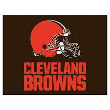

Odell Beckham Jr was chosen by the New York Giants at 12th pick of the first round of the NFl draft 2014. He made his debut wiht the Giants after missing the first 4 games of the season because of a hamstring injury. On his first game he recieved 44 yards and got a touchdown. On November 23rd he caught a one handed catch which was catch of the year that year and still now is refered as the greatest catch of all time. On december 2014 he became the first rookie to have 12 catches, 140 yards and 3 touchdowns in a game. In the final game of his rookie season he had a career high 185 yards. That game his 185 yards was also the most yards made y a rookie in the New York Giants history. That year he was also voted to be in the Nfl madden 16 cover. He is the youngest player to be on the cover of the game. The next season was not as exciting as hsi rookie season other than him getting involved in conflicts with Josh Norman. At the end of the season he had 1450 yards and 13 touchdowns. He was selected as the 10th player in the NFL top 100 players. He also made the pro bowl for the second time in a row. In the 2016 season he was fined in the first game of the season against the Dallas Cowboys. After that beckham played against the redskins where he became the fastest player to reach 200 receptions in 30 games. In 2016 he also took the Giants to the playoffs but lost. In that year he was ranked 8th player in the Nfl top 100. IN 2017 Beckham missed the first week becasue of an ankle injury. He returned in the second week but the Giants lost. He had another injury in week 5 beckham had suffered a fractured ankle and did not play the rest of the season. He came back to the Giants in the 2018 season after agreeing to a 5 year 95 million dollar contract extension. In his first game he got 111 yards with 10 receptions. Than in the final four games Beckham was out due to a quad injury. In this season he had 77 receptions and 1052 yards with 6 touchdowns and 2 touhdown passes.


On March 13, 2019 Odell Beckham jr was traded to the Cleveland Browns. In his first game for the Browns he caught 7 passes and had 77 yards. During a game against the New York Jets he caught a one handed catch and had an 89 yard rushing touchdown. That was the game that got people hyped up about the Browns and Odell Beckham jr. In the Browns Odell reuintes with his long time friend Jarvis Landr. Him and Landry played each other in Highschool, played together in college and now they are playing together in the NFL. This was such a memorable moment that Nike decided to make an ad about it.
The ad can be watched by clicking the link


Return to the topof the page.